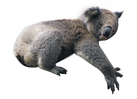
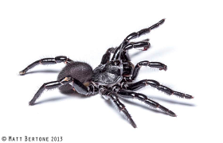

Animal- Koala
- The koala only eats eucalyptus leaves and it eats so many leaves, it smells like the leaves!
- Its closest living relatives are the wombats.
- They do not make nests, but sleep in a tree, fork or on a branch.
Animal- Kangaroo
- On land kangaroos only ever move their hind legs together, however in water they kick each leg independently to swim.
- There are four species of kangaroo, the Red, Antilopine, Eastern Grey and Western Grey Kangaroo.
- They can grow up to 2 metres.

Animal- Trapdoor Spiders
- Trapdoor spiders have special jaws that include hard spines, like teeth, that they use to move the dirt around
- Most trapdoor spiders have trapdoors on their burrows, but some don't.
- Their bites are not dangerous but local pain and swelling may occur.